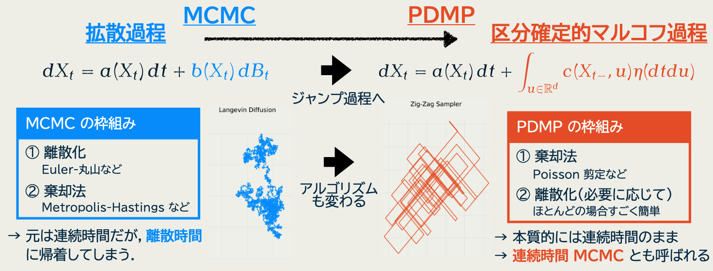

本稿では，筆者の博士課程で専門に選んだ MCMC，特に PDMP を用いた Monte Carlo 法について，その歴史と重要文献を挙げながら概説する．
1 MCMC
1.1 MCMC の確立
MCMC の手法自体は (Metropolis et al., 1953) が始まりであり，以降統計物理分野で発展を遂げていった．Gibbs サンプラーに対応する手法である熱浴法 (Glauber, 1963) もこの時点で既に現れる．1
一般の確率分布からのサンプリングを可能にする手法である，というより抽象的な理解は (Hastings, 1970) で確立された．これが統計学の文脈における最初の MCMC の出現である．2 同時に，PDMP が出現するまで，全ての MCMC 手法は Hastings の提示した枠組みの中に収まるのである．
その際に Markov 連鎖の概念の簡単さは大きく役に立ったものと思われる．Markov 連鎖を構成するには遷移行列と呼ばれる確率行列 \(P\) を一つ構築すれば良い，そしてその必要条件は簡単な式（詳細釣り合い条件） \[ \pi P=\pi \] で表せる．
MCMC が真に統計分野で再発見されたのはコンピュータが普及したのちである．画像処理と空間統計の分野で MCMC が採用され活発に研究され，その中で (Geman and Geman, 1984) により Gibbs サンプラーの名前がついた．
さらに空間統計以外の統計分野にも広く普及したのは，統計学の一流誌で複数の例を取り上げて紹介した (Gelfand and Smith, 1990) からだと言われる．
(Gelfand and Smith, 1990) 以降の MCMC の文献の数は大きく増える．中でも，応用分野での発展と手法的発展の２つに分けられる．モデリングを基調とする応用分野では，Gibbs サンプラーが今でも重要な位置を占めていると言える．
1.2 汎用 MCMC 手法の発展
A Blog Entry on Bayesian Computation by an Applied Mathematician
$$
$$
一方で，モデルに依らず，ブラックボックスで適用できる汎用手法の探索は，独自の発展を辿った．筆者の専門も専らこちらである．
1.2.1 Langevin dynamics による MCMC とその理論解析
まず (Grenander and Miller, 1994) のコメントにおいて，(Besag, 1994) が，分布 \(\pi\) に収束する Langevin dynamics \(\{X_t\}\subset\mathcal{L}(\Omega;\mathbb{R}^d)\) \[ dX_t=\nabla(\log\pi(X_t))\,dt+\sqrt{2\beta^{-1}}\,dB_t,\qquad\beta>0, \tag{1}\] を提案分布に用いた Hastings 法を示唆し，これは現在でも統計・機械学習の双方で理論的に重要な位置を占めている．
理論解析には主に２つのアプローチがある．１つはスケーリング解析であり，もう１つはスペクトル解析である．後者は筆者の専門ではないが，対数 Sobolev 不等式，等周不等式，対数凸分布，などがキーワードになる．
前者では，空間の次元 \(d\to\infty\) の極限において，\(\{X_t\}\) の時間と空間についてのスケーリングであって，確定的な極限を持つスケールを探す．続いて，そのダイナミクスについて中心化し，Gauss 過程に収束するような中心極限定理のスケールを特定する．
後者の中心極限定理のスケールにおける極限を調べ，その極限過程の平均自乗移動距離を比較することで，アルゴリズムの「速さ」を比較するというものである．これは，当該の過程からの出力を用いた Monte Carlo 推定量の漸近分散を比較する，という明確な意味を持つ．
本アプローチは (Roberts et al., 1997) により創始され，(Roberts and Rosenthal, 2001) に Statistical Science 誌での解説記事がある．
1.2.2 アルゴリズムとしての計算複雑性の解析
以上，MCMC が定める確率過程に対する理論解析のアプローチを２つ紹介したが，アルゴリズムとしての解析や計算複雑性の議論はまた別である．上述の２つの過程に対する解析も，計算複雑性に対する含意が可能である．例えばスケーリング解析については (Roberts and Rosenthal, 2016) など．
アルゴリズムに目を向けると，１つ厄介な点に気づく．そもそも Langevin 拡散過程 (1) をシミュレートするには離散化が必要であり，その際の誤差によって，離散化して得る Markov 連鎖の平衡分布は元々の \(\pi\) からズレてしまう．統計分野ではこのズレを補正するために Hastings の棄却法の枠組みが要請される．すると元々の Langevin 拡散 (1) と結果として得る MCMC とは，収束特性が異なる場合がある (Roberts and Rosenthal, 1998)．
補正なしのものを ULA (Unadjusted Langevin Algorithm)，ありのものを MALA (Metropolis-adjusted Langevin Algorithm) と呼ぶ．
ULA と MALA では当然計算複雑性が違う．MALA では各棄却法のステップで尤度比の評価が必要になり，データ数に応じて計算量が増える．一方で ULA を Monte Carlo 法に用いると漸近的に消えないバイアスを持つ．そこで，ULA のような特性を持つ手法を低精度手法，MALA を高精度手法と呼び，前者から初めて，途中でこの２つを切り替えることで，良いところどりをすることができる．この議論は (Altschuler and Chewi, 2023) から始まり，機械学習の分野で盛んである．
2 PDMP
2.1 Hastings の枠組みからの離陸
以上の議論は全て，(Hastings, 1970) の枠組みの下での MCMC 手法であった．提案 \(Q\) には大きな自由度があり，これを補正する形で所望の遷移核 \(P\) を得る，という構成法である．
離散時間の Markov 連鎖を生成することに拘らなければ，この枠組みから逸脱した Markov 過程を容易に作り出すことができる．
その主なアイデアは，所与のダイナミクスに対して，ジャンプによって制御するというものである．

PDMP は rejection-free MCMC などのキーワードの下で，当初は Event-Chain Monte Carlo の名前で，やはり統計物理分野で提案された (Bernard et al., 2009)．
2.2 PDMP の発展
レビュー的な文献には (Fearnhead et al., 2018) と (P. Vanetti, 2019) があるが，いずれも一昔前のものであり，「適用できるモデルが限られる手法である」というような言説は現在では違うと言って良い．
ここ５年の一大課題の１つには，PDMP の適用範囲の拡大，すなわち Poisson 剪定の自動化があったが，これは現在では複数の解決法を得ている．
- 自動微分の利用による上界の自動構成 (Corbella et al., 2022), (Andral and Kamatani, 2024)
- HMC 様の splitting scheme による近似スキームと，MH の方法による修正 (Bertazzi et al., 2023), (Chevallier et al., 2025)
3 文献紹介
3.1 PDMP のレビュー
PDMP ブームの早い段階から Statistical Science 誌に掲載された (Fearnhead et al., 2018) は第３節までの約 10 ページで，簡潔に PDMP の数学と性質，応用がまとまっている．特に 3.4 節にある数値実験では，２峰性を持つ事後分布に対して，\(d=128\) にて最適にチューニングした MALA の性能を BPS が大きく越す様子が示されている．
(Chapter 2 P. Vanetti, 2019) は，第１章で MCMC の基礎概念も概観していることもあり，約 35 ページでより詳しく扱っている．MCMC も同時に知りたい場合は勧めたいところだが，初学者が MCMC の多様な概念（Slice sampler や lifting など）をこれだけで理解できるとは少し思えない．
しかし，2019 年時点までの発展をほとんど全て網羅しており，PDMP の研究を本格的に視野に入れる際には「抑えておけば間違いない」文献ではある．
特に 2.1 節で PDMP を導入した後，2.2 節は生成作用素の扱いから始まっており，数理から入りたい場合には特に向いている．PDMP が特定の分布を不変にするための条件を証明している．一方で (Section 2 Fearnhead et al., 2018) では数式は理解を促進するために使われており，証明はない．初読の際にお勧めできる．
3.2 (Fearnhead et al., 2018) へのコメント
ということで PDMP について最初に読む文献としては (Fearnhead et al., 2018) を勧めるが，2016 年に初稿が書き上がった 10 年弱前の文献であることもあり，ここでいくらかコメントをする．
PDMP を連続時間 MCMC として捉え，SMC の連続時間バージョンと並列して説明している点は大変喜ばしいものであるが，現在の筆者はこの２つを全く分離して理解しており，SMC の方についてはコメントできない．
PDP (Piecewise Deterministic Process) という用語は，このクラスの過程を最初に定義した (Davis, 1984) に従ったものであると思われるが，現在は（少なくともベイズ統計では）PDMP という略語が主流になっていると言える．3
3.2.1 PDMP のシミュレーションについて
(Section 2.1 Simulating a PDP Fearnhead et al., 2018) は PDMP アルゴリズムを理解する上で最も重要な節である．PDMP のシミュレーションでは非一様なレート \(\Lambda_Z(s)\) を持つ Poisson 過程の到着時刻のシミュレーションがボトルネックになる．そのためサラッと
Below we will assume that our PDP has been chosen so that \(\Psi(·,·)\) is known analytically and that the proposal distribution at events, \(q(· | ·)\), can be easily simulated from.
と書かれているように，決定論的なフローは Hamiltonian flow などの数値積分が必要なものは，ほとんど考えられていない．数少ない例外は Hamiltonian flow を用いる (Paul Vanetti et al., 2018) と楕円軌道を用いる (Bierkens et al., 2020) である．「より複雑なフローを採用し，数値計算のコストを払うことは，より効率的な PDMP をもたらすか？」というようなリサーチクエスチョンはまだ決着していないと思われる．
(Section 2.1 Simulating a PDP Fearnhead et al., 2018) では Poisson thinning だけが紹介されている．この方向の研究としては，現在は自動微分を用いて上界を自動的に構成する方法が確立されている (Corbella et al., 2022), (Andral and Kamatani, 2024)．
以下他に２つの方向性を紹介するが，これらは Poisson thinning と違って誤差が入ることに注意する．（これを補正する Metropolis-Hastings 法またはその拡張も考えられている (Paul Vanetti et al., 2018), (Bertazzi et al., 2023), (Chevallier et al., 2025)）．
数値計算で直接 \(\Lambda_Z(s)\) の逆関数を計算し，到着時刻を近似する方法も (Pagani et al., 2024) で考察されている．
他にも HMC では leapfrog 法として標準的になっている splitting scheme を用いることで近似計算をする方法 (Bertazzi et al., 2023) がある．この方法はコードを極めて簡単にする．
3.2.2 PDMP の数理について
(Section 2.2 Analyzing a PDP Fearnhead et al., 2018) では PDMP の数理的な取り扱いが紹介されている．この章は飛ばしても何の問題もない．しかし，生成作用素などのキーとなる概念に関して，直感的で分かりやすい解説だと思う．
PDMP は Markov 過程であり，基本的には生成作用素 \(L\) の言葉で理解される．PDMP が特定の分布を平衡分布に持つことの証明も，この生成作用素が特定の性質を満たすことを示すことによって行われる．
しかしその証明はとんでもなく難しい．そもそも (Davis, 1984) が生成作用素の形を導いているのはほとんど奇跡である．(Davis, 1984) では Appendix でマルチンゲール点過程の理論を展開しており，その証明は極めてオリジナルで圧巻としか言いようがない．
さらに \(L\) のコアとして，コンパクトな関数からなるクラスが取れることを示すことがキーとなるステップである．具体的な PDMP の生成作用素 \(L\) のコアの特定は極めて困難である．この方向に関する既存文献は (Durmus et al., 2021) と (Holderrieth, 2021) の２つがあり，後者の方は極めて短いペーパーであり，証明の見通しも良い．(Holderrieth, 2021) の議論を引用しようと思うかもしれないが，残念ながらその補題 5.1 の証明は間違っている．我々には (Durmus et al., 2021) の膨大な理論が必要なのである．
References
Footnotes
他に重要な文献には，Metropolis 法の変種である (Barker, 1965) の提案核が挙げられる．↩︎
次に (Peskun, 1973) の理論研究が続く．↩︎
OR 分野では一部 PDP を現在に使う文献もあるかもしれない．↩︎